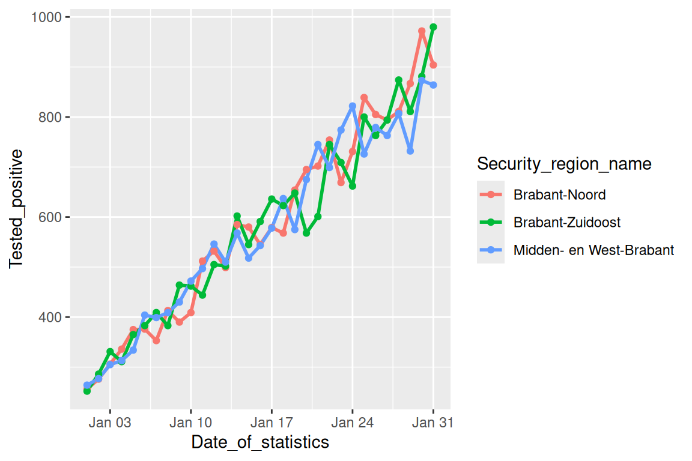
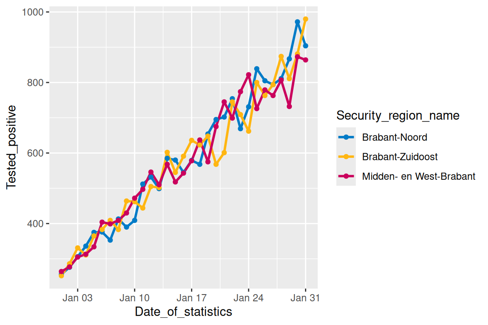
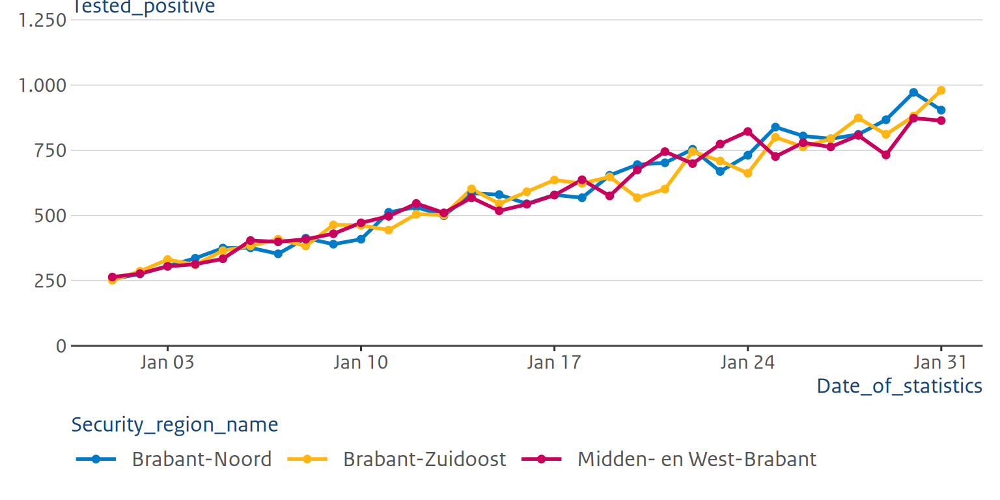
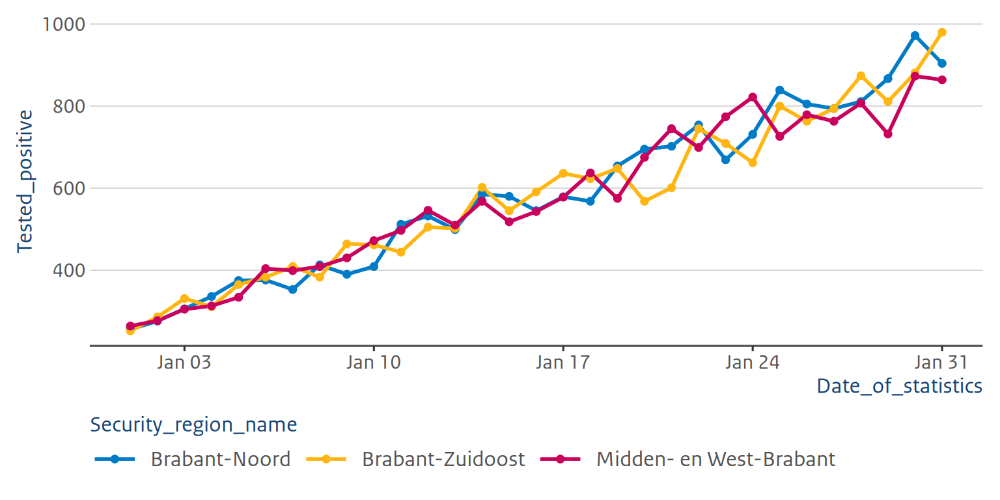

library(tidyverse)
library(ROvis.utils)
library(ROvis.ggplot2) # nolint: missing_package_linter.The visualization functions in ROvis make it easy to apply RIVM colors when creating plots R. In addition, ROvis provides standardized RIVM themes for graphs (ggplot2), tables (gt) and HTML reports created with rmarkdown. These color palettes and themes were designed to make reporting more consistent, readable, and aligned with the RIVM visual identity.
In our package, we follow the rijkshuisstijl wherever possible.
Important
In this vignette, the examples specifically follow the style guidelines of the National Institue for Public Health and the Envrionment (RIVM).
Loading data
First, we need to load the required packages.
Second, we generate simulated data that mimics the structure of COVID-19 test data. We will use data for January 2022 for example graphs.
# Set seed for reproducibility
set.seed(123)
# Generate data for multiple regions used in the examples
dat_test_cov <- expand_grid(
Date_of_statistics = seq(as_date("2022-01-01"), as_date("2022-01-31"), by = "day"),
Security_region_name = c(
"Brabant-Noord", "Brabant-Zuidoost", "Midden- en West-Brabant",
"Noord- en Oost-Gelderland", "Gelderland-Midden", "Gelderland-Zuid", "Onbekend"
)
) |>
mutate(
# Calculate day number (1-31) for upward trend
day_num = as.numeric(Date_of_statistics - as_date("2022-01-01")) + 1,
# Generate test numbers with slight variation
Tested_with_result = as.integer(round(rnorm(n(), mean = 1800, sd = 50))),
# Positive tests with steep upward trend: start at ~15% and increase to ~50%
positive_rate = 0.15 + (day_num - 1) * (0.50 - 0.15) / 30,
Tested_positive = as.integer(round(
Tested_with_result * positive_rate * rnorm(n(), mean = 1, sd = 0.05)
))
) |>
select(Date_of_statistics, Security_region_name, Tested_positive) |>
mutate(Security_region_name = factor(Security_region_name)) |>
as_tibble()The first 5 rows look like this:
dat_test_cov |>
head(5)
## # A tibble: 5 × 3
## Date_of_statistics Security_region_name Tested_positive
## <date> <fct> <int>
## 1 2022-01-01 Brabant-Noord 256
## 2 2022-01-01 Brabant-Zuidoost 252
## 3 2022-01-01 Midden- en West-Brabant 264
## 4 2022-01-01 Noord- en Oost-Gelderland 263
## 5 2022-01-01 Gelderland-Midden 279Colors
Exploring colors
To explore the RIVM color palettes included in ROvis, run ro_show_colors() in the R Console. This will open a visual display of the color palettes in the Viewer pane, where you can also hover over each color to see its corresponding hex code.
By default all 18 RIVM colors are shown. These standardized colors are recommended for use in visualizations to maintain consistency across reports. Some of these colors also have lighter (’_tint90’) and darker (’_tint110’) variations. These shades are helpful when you need to use several colors together, as they maintain similar contrast levels.
If you need multiple colors, you can use one of the predefined color palettes. For standardized reporting, we recommend using the built-in categorical and gender palettes instead of creating custom palettes. You can see a demonstration of all available palettes below:
Full
Categorical
ro_show_colors(palette_name = "categorical")Gender (conventional)
ro_show_colors(palette_name = "gender_con")Gender (unconventional)
ro_show_colors(palette_name = "gender_unc")Greys
ro_show_colors(palette_name = "greys")How to use colors in ggplot functions
To demonstrate the use of colors, we select the security regions in “Brabant” using filter. We start by creating a plot without specifying colors. Thus, the resulting plot shows standard colors of ggplot.
fig_brab <- dat_test_cov |>
filter(
Security_region_name %in% c("Midden- en West-Brabant", "Brabant-Noord", "Brabant-Zuidoost")
) |>
ggplot(aes(
x = Date_of_statistics,
y = Tested_positive,
color = Security_region_name
)) +
geom_line(linewidth = 1) +
geom_point()
fig_brab
Now, we want to apply the RIVM colors by using ROvis.utils::ro_color() as part of scale_colour_manual(). For categorical data, you should use the standard RIVM categorical color palette. The recommended order of the palette should be followed, starting with ‘hemelblauw’ for your first category.
fig_brab +
scale_colour_manual(
values = c(
"Brabant-Noord" = ro_color("hemelblauw"),
"Brabant-Zuidoost" = ro_color("donkergeel"),
"Midden- en West-Brabant" = ro_color("robijnrood")
)
)
Alternatively, we can use the ROvis.utils::ro_color_categorical() function in scale_colour_manual(). This function returns the hex codes of the categorical color palette in the correct order, which makes it very easy to use.
fig_brab +
scale_color_manual(values = c(ROvis.utils::ro_color_categorical()))
If you want to learn more about using color palettes for ordinal and continuous data, go to the Working with color palettes vignette.
Themes and style
Apply the RO style to your ggplot2 graphs the easy way: ro_gg_plot()
Above figures are not completely ready to publish yet. Luckily, there is a shortcut for getting your graphs into full RO style: ro_gg_plot(). This function applies the RO theme, formats your numbers with thousands separators, makes sure your axis starts at zero where that makes sense, moves your y-axis title to the right spot, and even fixes up bar spacing and tick marks if your plot has bars. It also drops legend titles automatically, since RO style never shows them.
Just build your plot the way you normally would, save it to an object, and run ro_gg_plot() on it as the very last step:
fig_brab_ro <- fig_brab +
scale_color_manual(values = c(ROvis.utils::ro_color_categorical()))
ro_gg_plot(fig_brab_ro)
## Keep in mind that when using ro_gg_theme, you need to take additional coding steps to fully comply
## with the RIVM style. For more information, see the ROvis documentation website:
## https://rivm-syso.github.io/ROvis
## This message is displayed once per session.
## Warning in scale_x_date(): A <numeric> value was passed to a Date scale.
## ℹ The value was converted to a <Date> object.
## A <numeric> value was passed to a Date scale.
## ℹ The value was converted to a <Date> object.
Just the theme: ro_gg_theme()
Sometimes you only want the look and feel (colors, fonts, background, and so on) without the other automatic fixes. In that case, you can use the lower-level ro_gg_theme(). It is actually the theme that ro_gg_plot() uses behind the scenes.
You can add it with +, the same way you would add any other ggplot theme. Version 1.0 is the first official version published, and ro_gg_theme(version = "1.0") gives you that version. For the full list of what this theme does, run ?ro_gg_theme() in your console.
fig_brab +
scale_color_manual(values = c(ROvis.utils::ro_color_categorical())) +
ro_gg_theme(version = "1.0")
Keep in mind that if you use ro_gg_theme() on its own, you will need to take some extra coding steps yourself to fully comply with RO style, things like number formatting and axis positioning. That is exactly why ro_gg_plot() exists, to save you that work.
Want to see everything ro_gg_plot() can do, across different chart types? Check out the ggplot2 in RO style vignette.